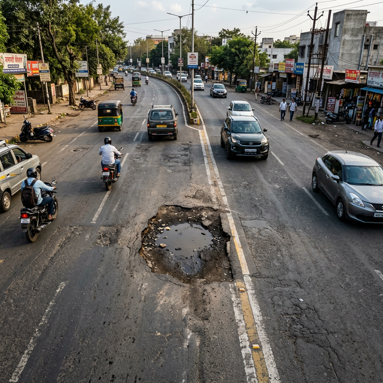

Real-time pothole detection using IoT sensors with blockchain-verified reporting. Making Pune's roads safer, one pothole at a time.

An end-to-end IoT solution that uses vibration and ultrasonic sensors mounted on vehicles to detect potholes in real-time, with location data stored immutably on the Ethereum blockchain.
ESP32-based sensors with accelerometer and ultrasonic modules detect road anomalies with high precision.
Potholes are plotted on an interactive map with severity-based color coding in real time via Firebase.
Every detection is recorded on Ethereum (Sepolia) for tamper-proof, transparent, and verifiable public infrastructure data.
Advanced accelerometer algorithms differentiate between normal road bumps and actual potholes with severity scoring.
Precise geo-location tagging ensures each pothole is accurately mapped with latitude and longitude coordinates.
Green (1-4), Orange (5-7), Red (8-10) severity scale enables prioritized road maintenance allocation.
Smart contract on Ethereum stores every pothole report as a permanent, verifiable on-chain transaction.
Real-time database synchronization powers instant map updates as new potholes are detected by any connected device.
Toggle between street, satellite, and dark mode views for comprehensive road surface analysis and monitoring.
Preview our real-time pothole detection map below. Click "Open Full Map" for the complete interactive experience.
Our prototype has been tested across multiple zones in Pune, Maharashtra — detecting and recording potholes with blockchain-verified accuracy.
Katraj Ghat & Surroundings
Pimpri-Chinchwad Municipal Corp.
Sangvi Residential Area
Central Commercial District
Our prototype was deployed across diverse road conditions — from ghat roads to commercial districts — to validate detection accuracy across varying terrains and traffic densities.
Whether you're a municipal authority, an NGO, or a tech enthusiast — join us in building smarter, safer roads for India.